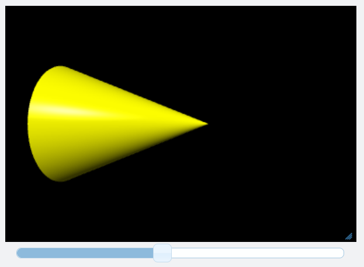

Sliders¶
{kind=link}
Sliders are widgets that give a numerical value. Dragging a slider invokes a function (an event handler). The attributes below are labeled “not modifiable” if they cannot be modified after creating the slider. The demo program Color-RBG-HSV uses multiple sliders to adjust colors.
- myslider = slider( bind=myaction, min=0, max=50 )
- Parameters:
bind (function) – The function to be called when the button is clicked.
min (scalar) – The minimum value of the slider. Default is 0. Not modifiable.
max (scalar) – The maximum value of the slider. Default is 1. Not modifiable.
step (scalar) – The step size when clicking or dragging. Default is 0.001*(max-min). Not modifiable .
value (scalar) – The current value. Can be set by program as well as by user. When a program sets value, the bind function is not executed.
vertical (boolean) – If True, slider is vertical. Default is False (horizontal). Not modifiable.
length (scalar) – The length of the slider in pixels. Default 400 px. Not modifiable.
width (scalar) – The width of the slider in pixels. Default 10 px. Not modifiable.
left (scalar) – Margin to the left of slider, in pixels. Default 12 px. Not modifiable.
right (scalar) – Margin to the right of slider, in pixels. Default is 12 px. Not modifiable.
top (scalar) – Margin above the slider, in pixels. Default is 0 px for horizontal, 8 px for vertical. Not modifiable.
bottom (scalar) – Margin below the slider, in pixels. Default is 0 px for horizontal, 8 px for vertical. Not modifiable. Currently does not work properly.
align (string) – If ‘left’, slider is displayed at left of window. Options are ‘left’, ‘right’, ‘none’ (the default). Not modifiable.
pos (attribute of canvas) – Location of widget. Default is scene.caption_anchor.
disabled (boolean) – If True, widget is grayed out and is inactive.
delete() –
myslider.delete()deletes the widget.
The following code creates a slider with an attribute id that adjusts the length of a cone:
cc = cone(color=color.yellow, axis=vec(2.5,0,0), pos=vec(-2,0,0) )
def stretch(evt):
console.log(evt)
if evt.id is 'x':
cc.length = evt.value
xslider = slider(bind=stretch, max=5, min=0.5, step=0.1, value=cc.length, id='x')
Sliders do not have a text field. If you wish to display the current value of a slider, use wtext.
Slider Event Attributes¶
The argument of the event handler function (‘evt’, in the code above) will have the following attributes (properties of the slider at the time it was clicked):
evt.valueevt.disabled
Additionally, any attributes you have created for the widget (for example, name or id), will be available as attributes of evt.
See also